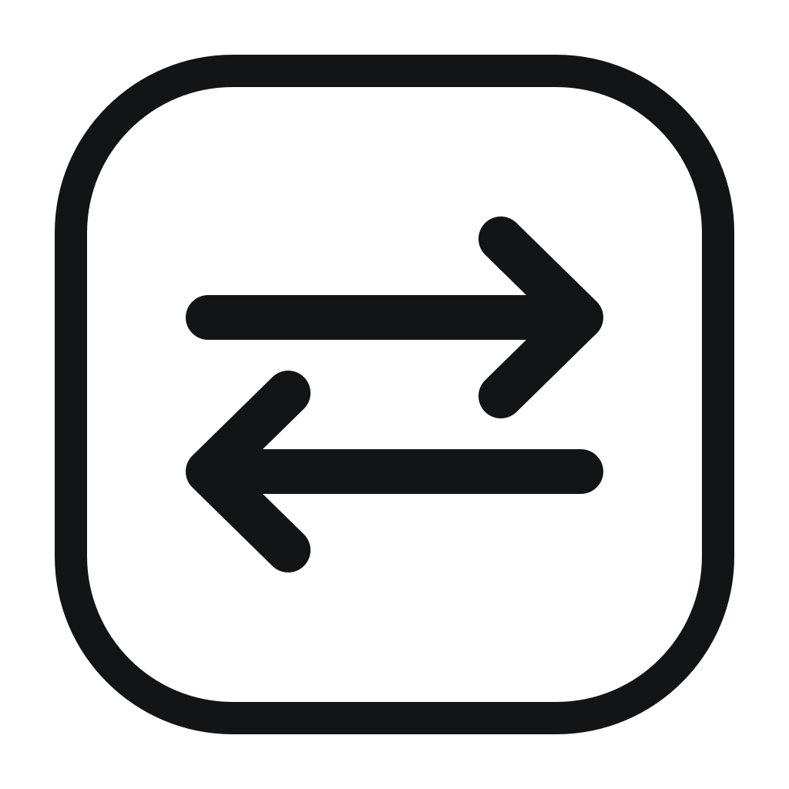

One shortcut away
Switch from the menu bar or use ⌘⌥1 through ⌘⌥9.

switchRBuilt for macOS
A private, offline-first menu bar app for moving between Claude Desktop accounts on one Mac.
macOS 13 or later · Free and open source
Switch from the menu bar or use ⌘⌥1 through ⌘⌥9.
No network calls, telemetry, tracking, or background polling.
Session snapshots stay on your Mac and are verified before restore.
Simple on purpose